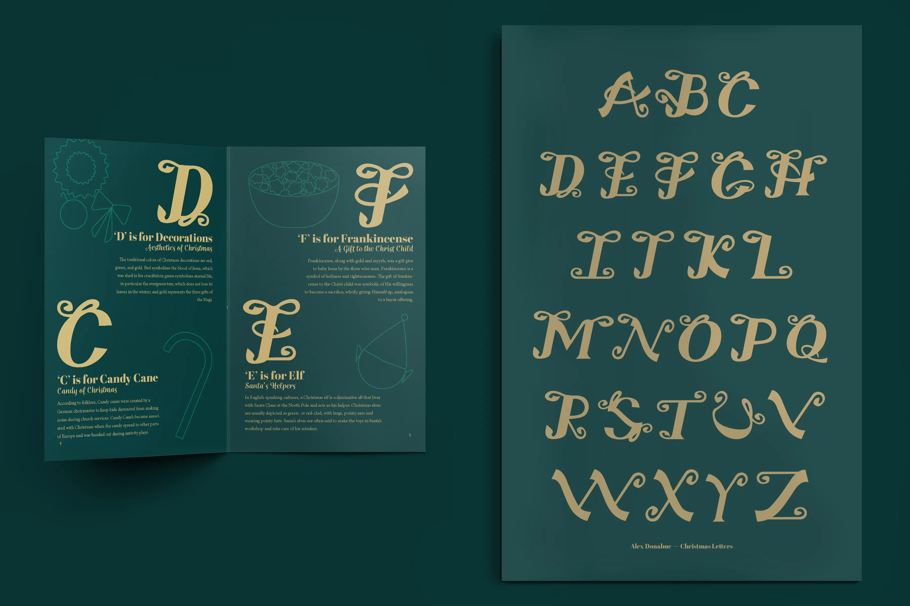
 Print Design
Print Design
Project Brief
For this project, the brief was to design a themed display typeface and put it to use in a type specimen book. I chose a Christmas theme and decided to pair each of the 26 letters with its own holiday word (A for Angel, B for Bethlehem) and a matching hand-drawn illustrative detail, so the specimen book would double as a small alphabet story rather than just a character showcase.
I anchored the whole alphabet in a shared ornament-inspired structure with consistent stroke weight, a recurring flourish language, and a unified gold-on-green palette, so the individuality of each letter stays readable as variation within one system, not a break from it.
Final Design
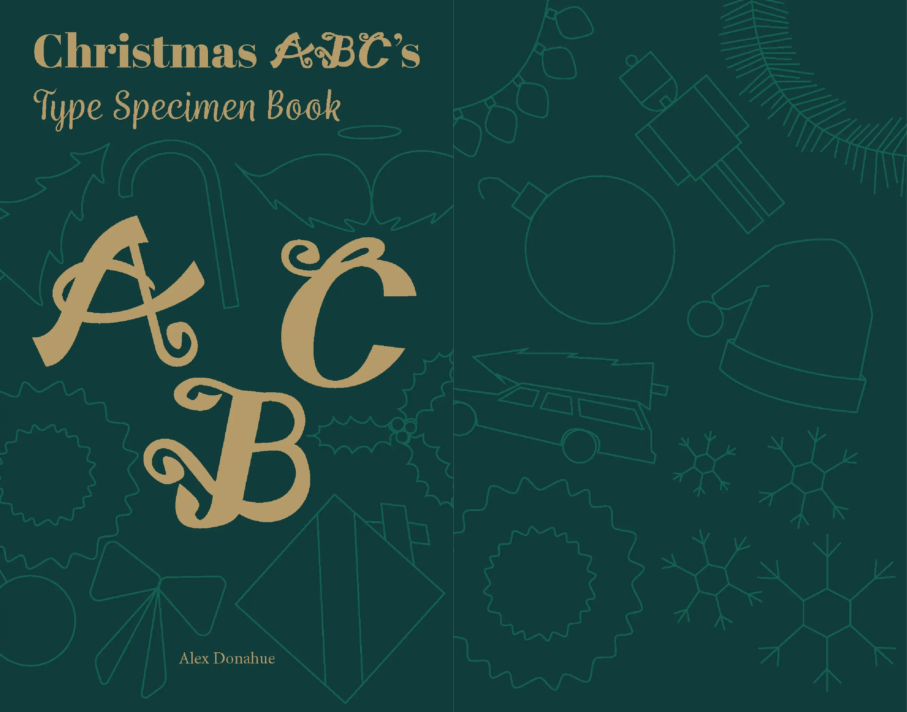
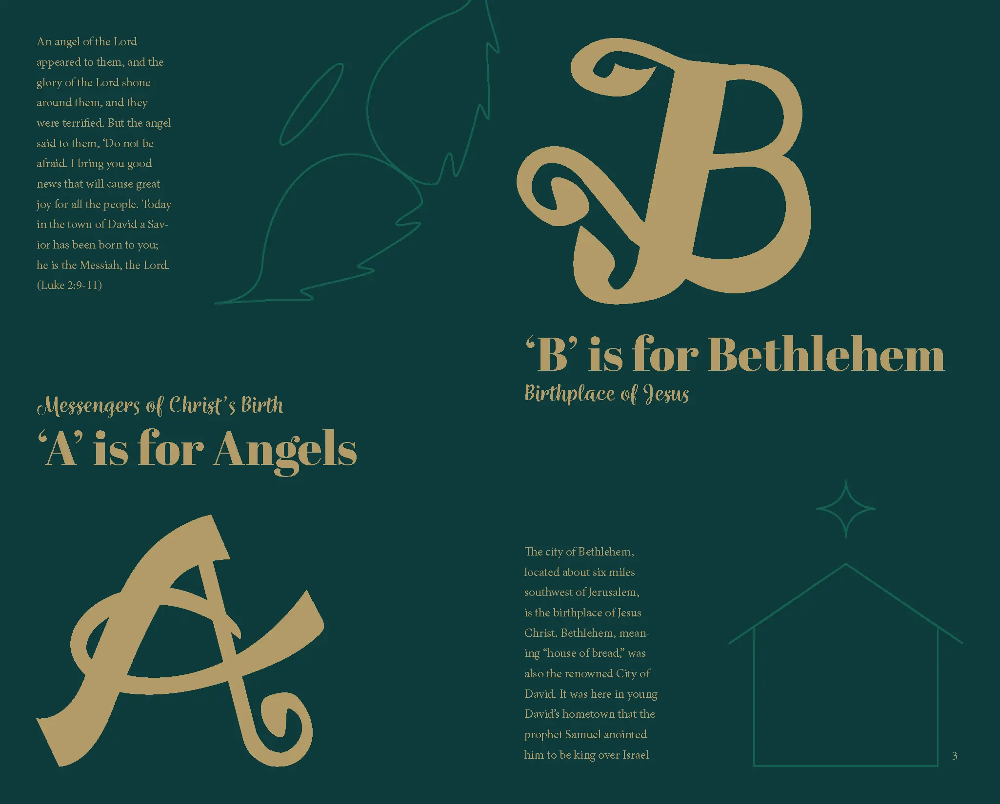
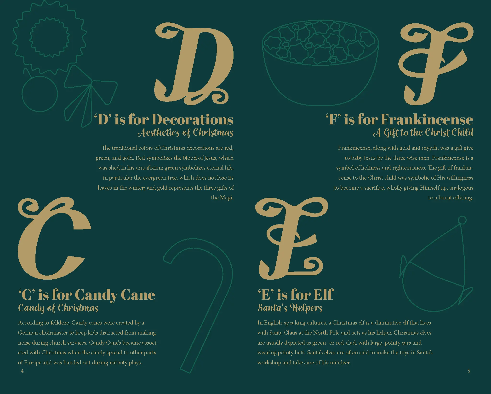
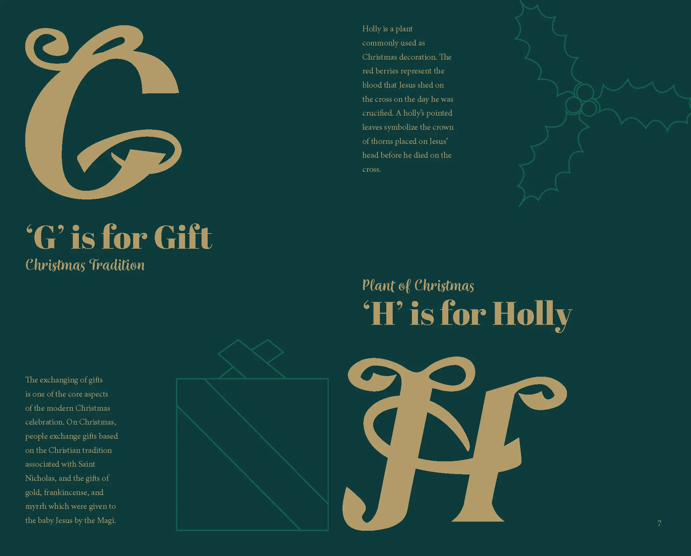
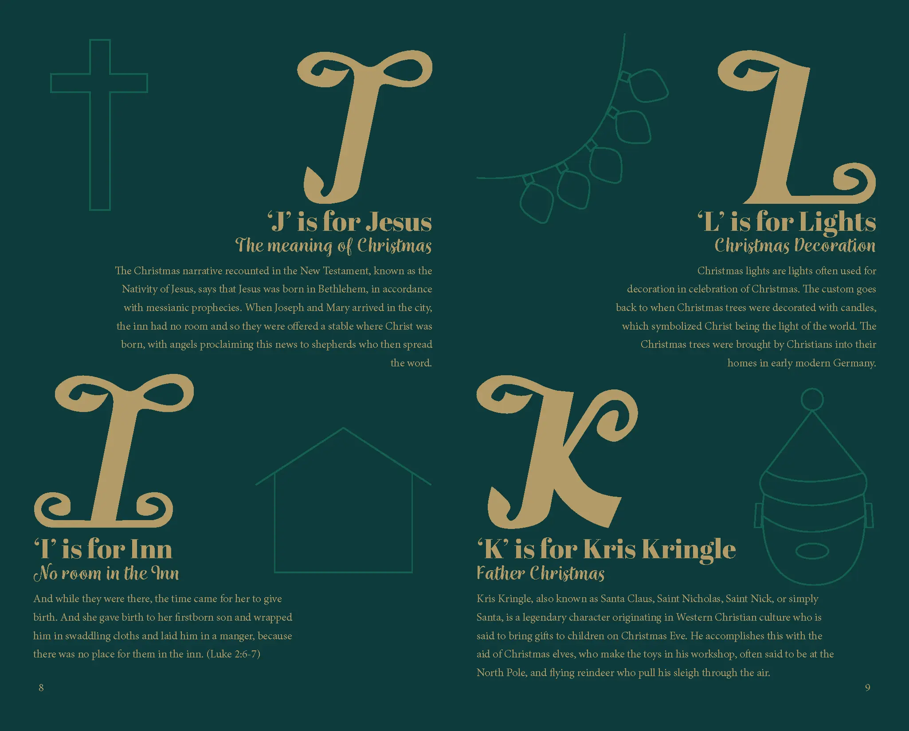
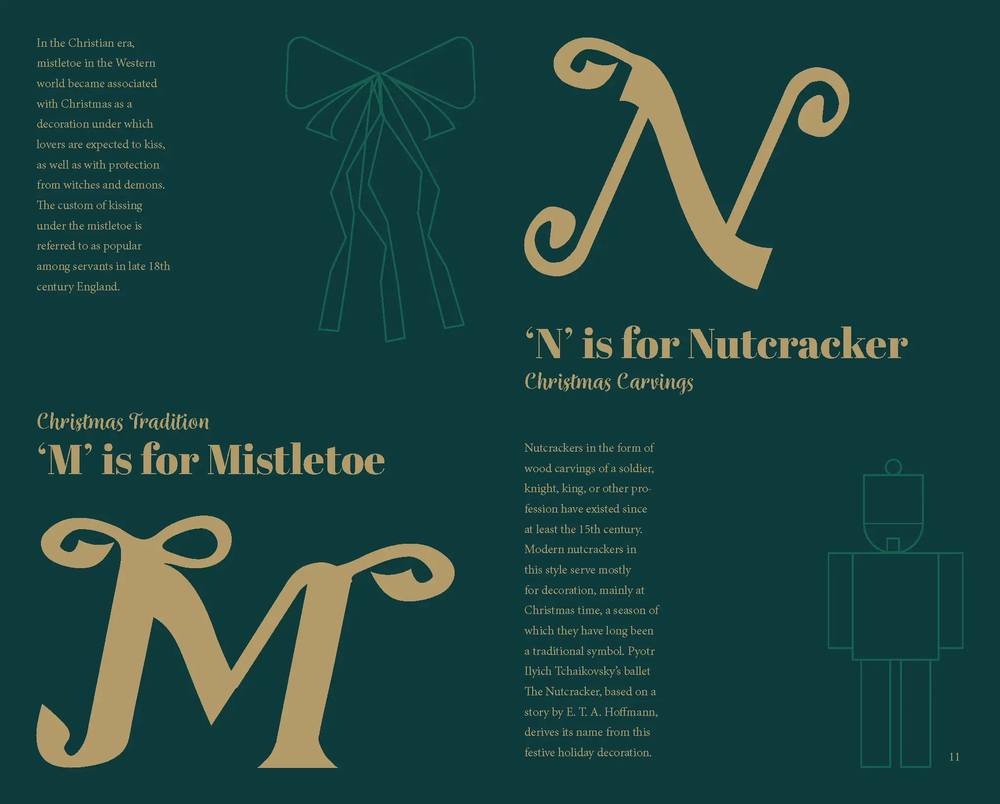
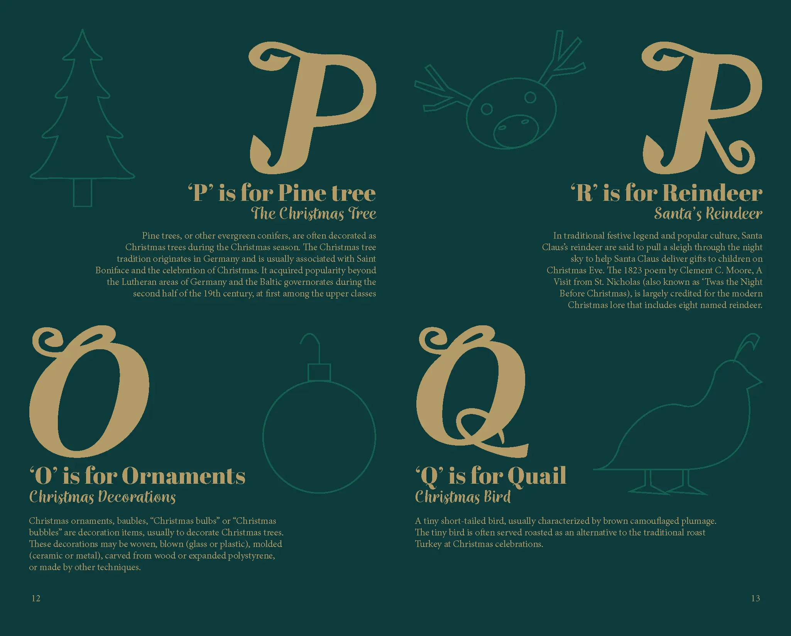
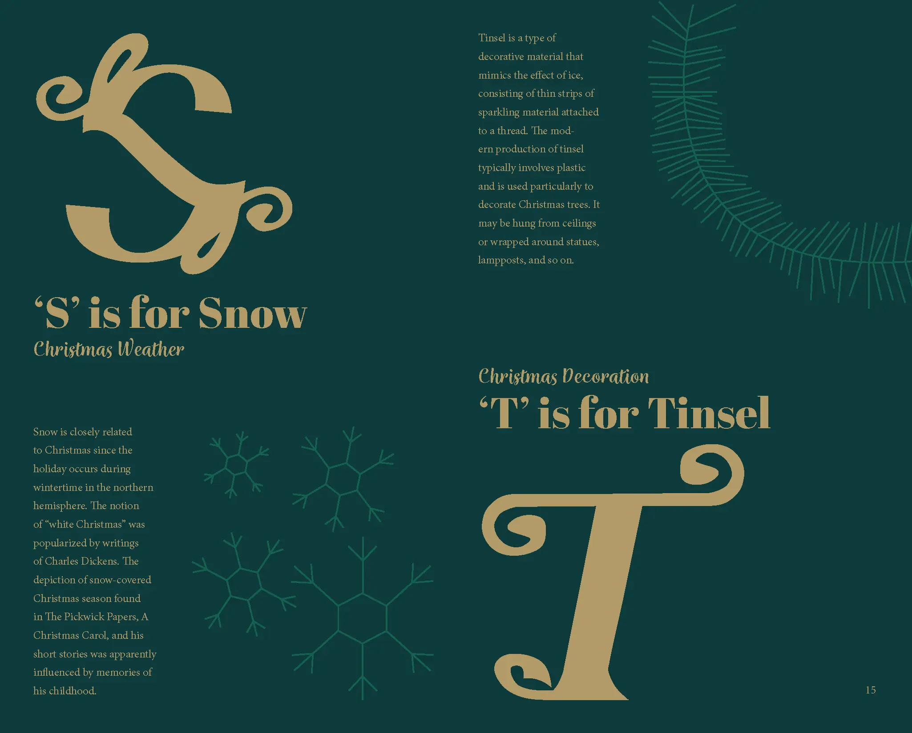
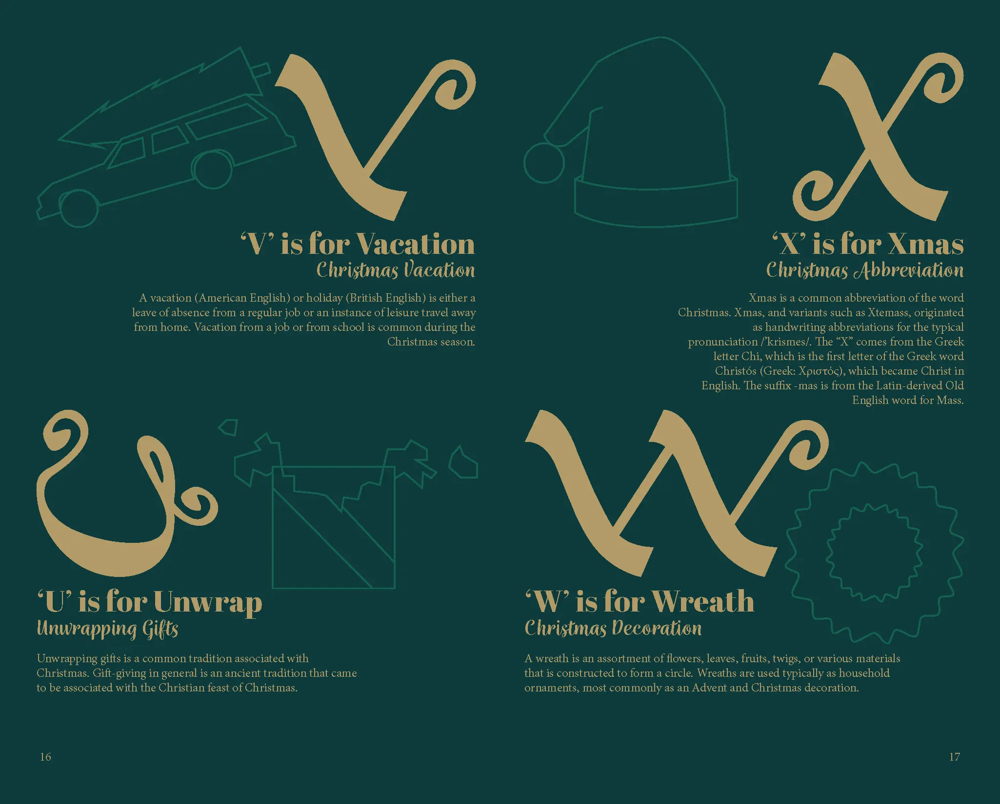
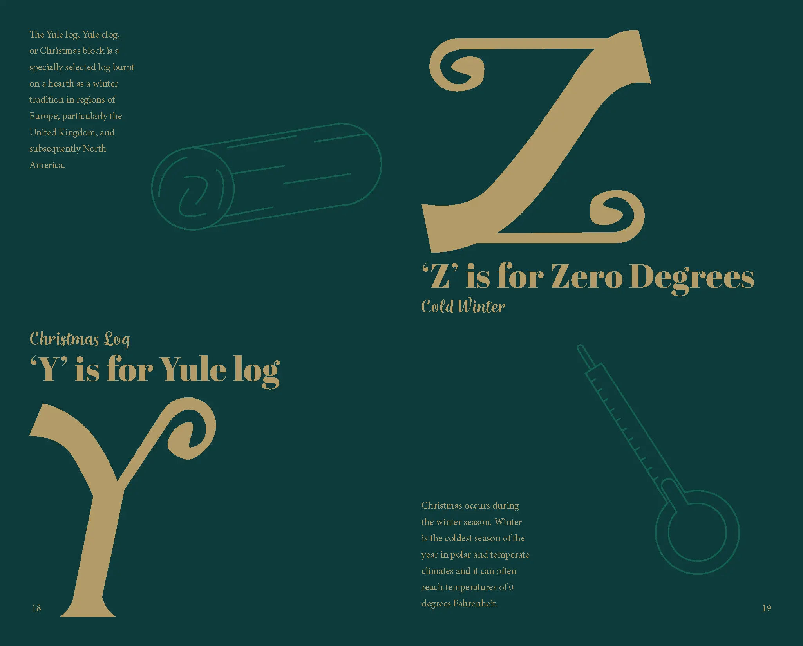
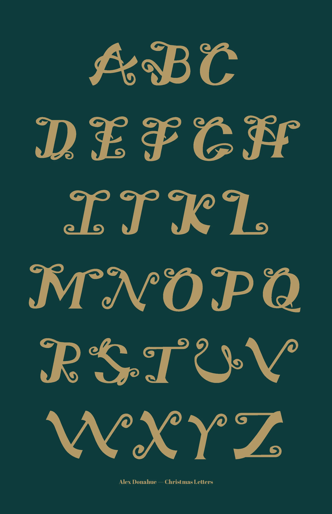